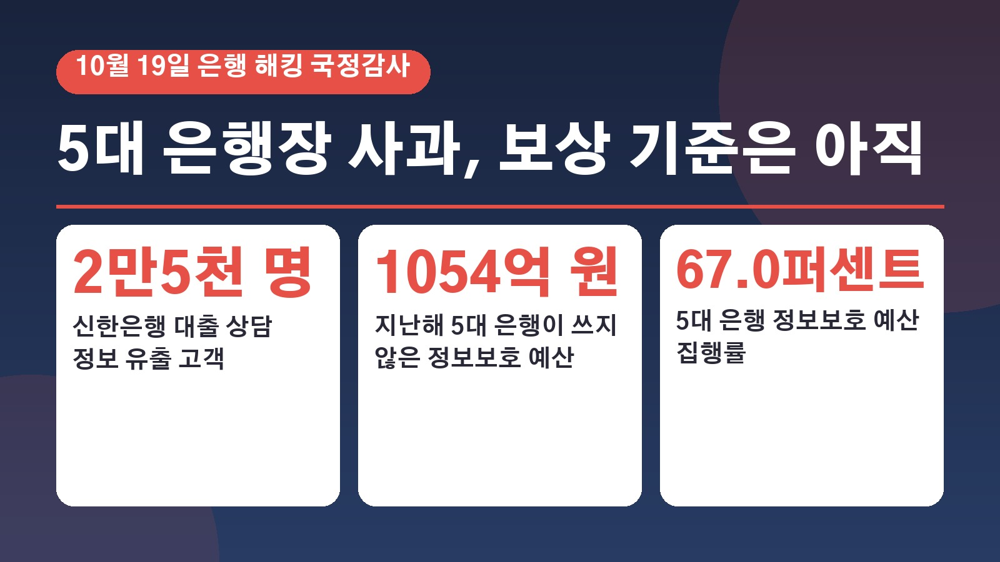
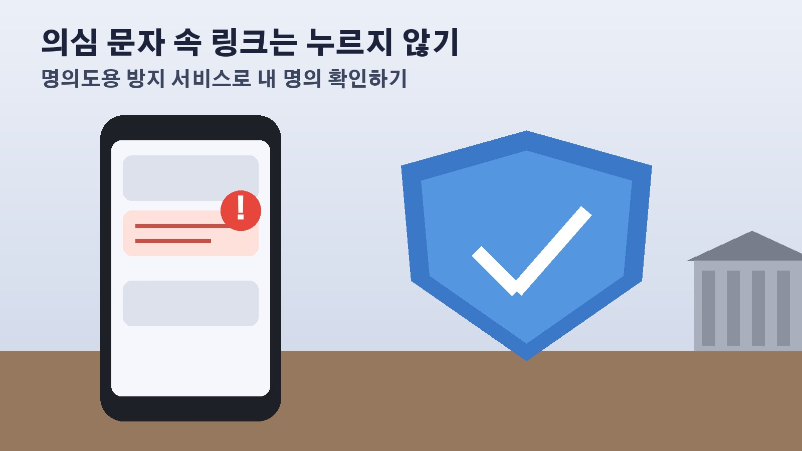

신한 2만5천 명 정보 유출 뒤 열린 은행 해킹 국감, 5대 은행장이 약속한 배상과 집행 안 된 보안예산 1054억 원

혹시 은행에서 개인정보가 유출됐다는 안내 문자를 받으셨거나, 내가 거래하는 은행은 괜찮은지 걱정되셨던 분들 계실 거예요. 지난달 말 시중은행들이 잇따라 해킹을 당한 뒤, 10월 19일 국정감사에 5대 은행장이 한자리에 증인으로 나왔습니다. 무슨 일이 있었는지, 은행장들이 어떤 약속을 했는지, 그리고 보상은 어디까지 정해졌는지를 차례로 정리해 볼게요.
세 은행에서 빠져나간 고객 정보, 무슨 일이 있었나
가장 피해가 컸던 곳은 신한은행이에요. 약 2만5천 명의 고객명, 전화번호, 연 소득, 대출 한도 같은 대출 상담 정보가 빠져나갔고, 이 가운데 주민등록번호 66건과 연계정보 97건도 포함됐습니다. 대출모집인이 모바일 홈페이지에서 아이디와 비밀번호만으로 대출 처리 현황을 볼 수 있게 해 둔 곳이 뚫린 건데요, 다른 곳에서 얻은 아이디와 비밀번호를 될 때까지 넣어 보는 방식의 공격이 의심되고 있어요.
KB국민은행은 직원용 모바일 업무 지원 시스템을 통해 고객 119명의 이름, 전화번호, 주소, 암호화된 주민등록번호 등이 유출됐고, 하나은행은 영업지원시스템이 뚫려 89명의 주민등록번호, 이름, 주소, 이메일 주소, 전화번호, 직장명이 새어 나갔습니다. 하나은행은 9월 30일 침입이 있었고 10월 2일 이를 확인해 해당 고객에게 휴대폰과 이메일로 따로 알렸다고 밝혔어요. 세 은행 모두 이번에 뚫린 곳은 고객이 쓰는 인터넷뱅킹이나 모바일뱅킹 거래 시스템과는 별개라고 설명했습니다. 우리은행과 NH농협은행도 비슷한 공격을 받았지만 차단해서 지금까지 확인된 유출은 없다고 해요.
은행권만의 일도 아니었어요. 10월 초 보도 기준으로 정보 유출이 확인된 금융사는 신한, KB국민, 하나, BNK부산은행과 예가람저축은행, 웰컴저축은행, 현대캐피탈까지 7곳이었고, 예가람저축은행에서는 고객 약 4만 명의 정보가 빠져나간 것으로 파악됐습니다.
국감장에서 5대 은행장이 한 말
19일 오후 국회 정무위원회의 금융감독원 국정감사에 이환주 KB국민은행장, 정상혁 신한은행장, 이호성 하나은행장, 정진완 우리은행장, 강태영 NH농협은행장이 증인으로 나와 차례로 사과했어요.
이환주 행장은 예산과 인력을 충분히 확보하고 인공지능을 앞세운 해킹에 인공지능 보안 시스템으로 맞서겠다고 했습니다. 해커가 가장 먼저 들어온 곳이 KB국민은행이라는 지적에는 빠르게 막지 못한 점이 아쉽다고 답했고요. 9월 30일 회의에서 정보보호 담당 임원이 기록 삭제와 은폐를 지시했다는 제보가 있다는 의혹 제기에는 자신이 지시한 적도, 보고받은 적도 없다고 했어요.
이호성 하나은행장은 수수료 면제 같은 조치는 이미 했고 금융안심보험 등으로 2차 피해를 막겠다고 했습니다. 지금까지 정보 유출로 인한 피해는 없지만, 피해가 생기면 전부 배상하겠다고 약속했어요. 유출이 없었던 두 은행도 몸을 낮췄는데요, 정진완 우리은행장은 이번에 피해를 보지 않은 건 그냥 운이 좋았기 때문이라며 하루 200건이 넘는 해킹 공격이 들어온다고 말했고, 강태영 NH농협은행장은 2022년에 만든 차세대 통합 관제 시스템을 계속 고도화하겠다고 했습니다.
보안예산 1054억 원은 왜 도마에 올랐나
이날 가장 날카로웠던 질문은 돈 문제였어요. 국민의힘 김재섭 의원이 공개한 자료에 따르면 지난해 5대 은행의 정보보호 예산 집행률은 67.0퍼센트였습니다. 짜 놓은 예산 3198억4천만 원 가운데 1054억1천만 원이 쓰이지 않았다는 뜻이에요.
신한은행을 두고는 더불어민주당 전현희 의원이 피해는 1등인데 보안예산 규모는 꼴찌라고 꼬집었습니다. 신한은행이 지난해와 올해 중국에서 두 차례 해킹 피해로 현지 당국의 과태료를 받았고 멕시코에서도 제재를 받았다는 지적도 나왔어요. 정상혁 행장은 미흡한 부분이 많았다며 국민이 납득할 만한 수준으로 정보보호에 투자하겠다고 답했습니다.

금융당국 책임론도 함께 나왔어요. 금감원은 지난달 9일 인공지능 기반 해킹 위험을 경고했고, 금융보안원은 17일 인공지능 에이전트 공격 대응 교육까지 했는데, 정작 금융회사들이 실제 약점을 고쳤는지는 확인하지 않은 것 아니냐는 지적이었습니다. 금감원 업무보고를 보면 올해 2월 통합관제시스템을 가동한 뒤 9월까지 금융권에 알린 사이버 위협 정보가 213건이었고, 8월 20일부터 9월 30일 사이에만 공격자 주소 등 20건을 집중 안내했다고 해요. 또 다른 자료에서는 금융회사 555곳 가운데 130곳, 23.4퍼센트가 보안 관리 미흡 사항을 보고한 것으로 나타났습니다.
피해가 생기면 보상은 어디까지 될까
유출이 확인된 은행들은 대부분 실제 피해가 생기면 전액 보상하겠다는 입장이에요. 유출된 정보가 보이스피싱 같은 범죄에 쓰여 2차 피해로 이어지는 경우까지 보상하겠다는 취지입니다. 10월 초 보도 기준으로 이번 해킹에 따른 금전 피해는 확인되지 않았어요.
다만 어떤 피해를 보상 대상으로 인정할지, 유출과 피해 사이의 연관성을 어떻게 판단할지는 아직 구체적인 기준이 나오지 않았습니다. 지금 은행권에는 범죄자가 몰래 돈을 이체한 경우 은행도 피해액을 나눠 지는 비대면 금융사고 책임분담제도가 있는데요, 속아서 본인이 직접 돈을 보낸 경우는 원칙적으로 여기서 빠져요. 그래서 이번 유출 정보로 은행 직원이나 대출상담사를 사칭한 사기에 속아 송금했다면 기존 제도만으로는 구제받기 어렵다는 지적이 나옵니다.
하나은행은 유출 안내문에서 2차 피해를 줄이는 방법도 함께 알렸어요. 본인 확인을 핑계로 한 출처 불분명한 문자 속 링크는 누르지 말고 은행이나 택배사를 사칭한 전화와 문자에 개인정보나 금융정보를 넣지 말라는 것, 개인정보 노출 등록이나 비대면 계좌개설 안심차단 같은 명의도용 방지 서비스로 내 명의가 함부로 쓰이는지 주기적으로 확인하라는 것이에요. 스미싱 문자는 한국인터넷진흥원 118, 보이스피싱은 전기통신금융사기 통합신고대응센터 1566 1188로 신고할 수 있다고 안내했습니다.
이제 지켜볼 것, 금감원 점검과 대출 금리 문제
이찬진 금융감독원장은 철저히 원인을 밝혀 보안 허점을 빨리 메우겠다며, 인공지능 공격에 인공지능 방어로 맞서도록 금융회사의 자체 보안 역량을 키우겠다고 했어요. 전산 자산 관리 강화, 모의해킹 확대, 보안 예산과 인력 확충도 추진하고, 우리은행과 농협은행의 보안 체계가 실제로 공격을 막는 데 효과가 있었는지 직접 점검할 계획입니다. 피해를 본 은행과 그렇지 않은 은행의 차이를 분석한 결과도 국회에 내기로 했고, 감독 쇄신안은 11월 중 제출될 것으로 보인다고 밝혔어요.
대출을 쓰는 분이라면 이날 나온 금리 이야기도 눈여겨볼 만합니다. 7월 개정 은행법 시행 뒤 일부 은행이 가산금리를 내리면서 우대금리를 더 크게 줄였다는 지적이에요. 금융위원회 제출 자료로는 KB국민은행이 6월에서 8월 사이 가산금리를 3.42퍼센트포인트에서 3.34퍼센트포인트로 낮추면서 우대금리는 1.96퍼센트포인트에서 1.65퍼센트포인트로 줄였고, NH농협은행은 가산금리를 3.60퍼센트포인트에서 3.34퍼센트포인트로, 우대금리는 2.19퍼센트포인트에서 1.58퍼센트포인트로 낮췄습니다. 두 은행장은 우려를 이해한다며 세부 자료를 보고하겠다고 답했어요.
정리하면 은행들은 사과와 함께 전액 배상과 보안 투자 확대를 약속했지만, 보상 기준은 아직 정해지지 않았고 원인 조사 결과도 나오지 않았습니다. 유출 안내를 받으셨다면 은행이 알려 준 2차 피해 예방 방법부터 챙겨 두시고, 앞으로 나올 보상 기준과 금감원 점검 결과를 함께 지켜보시면 좋겠어요.
참고한 기사 연합뉴스 5대 은행장 해킹 국감서 줄사과, 피해 재발 막겠다 2026년 10월 19일, 머니투데이 정상혁 신한은행장 국민 납득할 만한 수준 정보보호 투자 하겠다 2026년 10월 19일, 이투데이 은행 해킹과 상장지수펀드 심사 논란에 금감원 감독 책임론 2026년 10월 19일, 연합뉴스 대출 고객정보 홈페이지에 저장해 둔 신한은행, 무작위 해킹에 털렸다 2026년 10월 1일, 연합뉴스 국민 하나 부산은행도 당했다, 금융권 해킹 피해 확산 2026년 10월 2일, 뉴시스 금융권 해킹 사고로 보이스피싱 당하면 전액 보상 받을 수 있을까, 하나은행 개인신용정보 유출 관련 안내 및 사과문 2026년 10월 3일
태그
은행해킹 개인정보유출 신한은행해킹 KB국민은행 하나은행 은행장국정감사 정보보호예산 해킹피해보상 보이스피싱2차피해 명의도용방지서비스